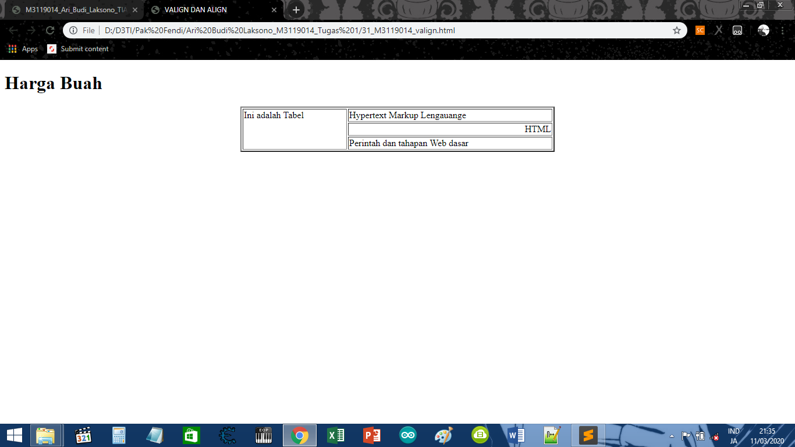

Valign dan Align
KODE PROGRAM
<!DOCTYPE html>
<html>
<head>
<meta charset-"UTF-8">
<title>VALIGN DAN ALIGN</title>
</head>
<body>
<h1>Harga Buah</h1>
<table border="2" align="center" width="40%">
<tr>
<td rowspan="3" valign="top">Ini adalah Tabel</td>
<td>Hypertext Markup Lengauange</td>
</tr>
<tr>
<td align="right">HTML</td>
</tr>
<tr>
<td>Perintah dan tahapan Web dasar</td>
</tr>
</table>
</body>
</html>
HASIL PROGRAM
Harga Buah
| Ini adalah Tabel |
Hypertext Markup Lengauange |
| HTML |
| Perintah dan tahapan Web dasar |
SCREENSHOT

KESIMPULAN
Dari koding di atas, Dapat disimpulkan bahwa cara membuat valign kita harus menuliskan
<td align=""></td>
Kembali Ke Halaman Utama